Umordnung einer bedingt konvergenten Reihe zu Divergenz oder Konvergenz
1. Satz
Sei  eine bedingt konvergente Reihe in
eine bedingt konvergente Reihe in  , so existiert eine Umordnung 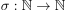, so dass für beliebiges 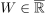 gilt:
, so existiert eine Umordnung 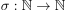, so dass für beliebiges 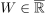 gilt:
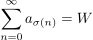
1
2. Beweisskizze
unterteilung von  in (disjunkte) Teilfolgen mit
in (disjunkte) Teilfolgen mit  und 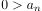.
Insbesondere ist jedes Gleid von in genau einer der beiden Teilfolgen.
Die Reihe einer Teilfolge divergiert gegen
und 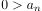.
Insbesondere ist jedes Gleid von in genau einer der beiden Teilfolgen.
Die Reihe einer Teilfolge divergiert gegen  , weil sonst nach dem Riemannschen Umordnungssatz die folge absolut konvergieren würde.
Setzen eines Ziels 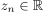, für 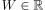 ist 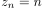, o.B.d.A. für 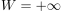 ist
Für o.B.d.A. 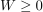 folgender Algorithmus:
Falls 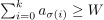, so wird
, weil sonst nach dem Riemannschen Umordnungssatz die folge absolut konvergieren würde.
Setzen eines Ziels 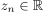, für 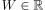 ist 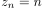, o.B.d.A. für 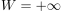 ist
Für o.B.d.A. 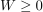 folgender Algorithmus:
Falls 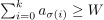, so wird  ffür 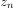 inkrementiert und 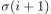 ist das nächste Glied der negativen teilfolge, sonst wird das nächtse positive gleid der teilfolge.
da eine Nullfolge ist, konvergiert das für einen festen wert, für 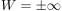 divergiert das wegen Archimedizität
ffür 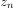 inkrementiert und 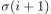 ist das nächste Glied der negativen teilfolge, sonst wird das nächtse positive gleid der teilfolge.
da eine Nullfolge ist, konvergiert das für einen festen wert, für 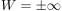 divergiert das wegen Archimedizität